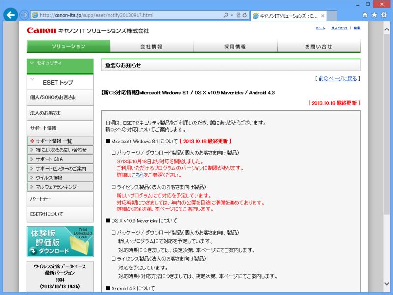
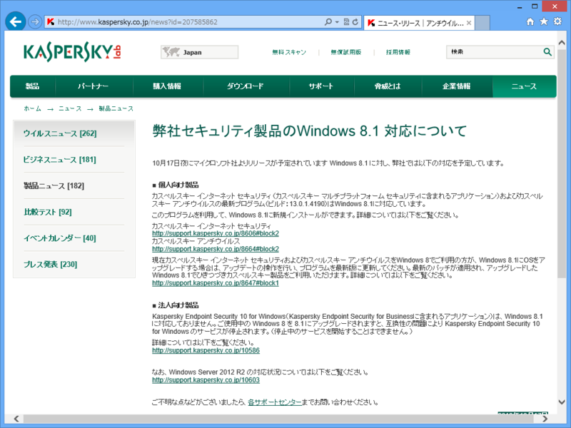
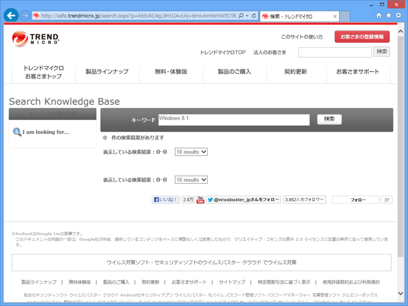
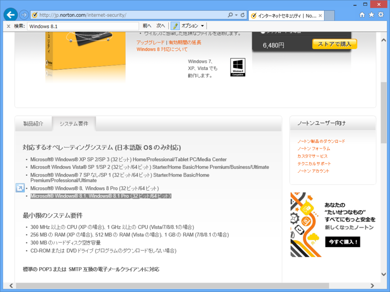
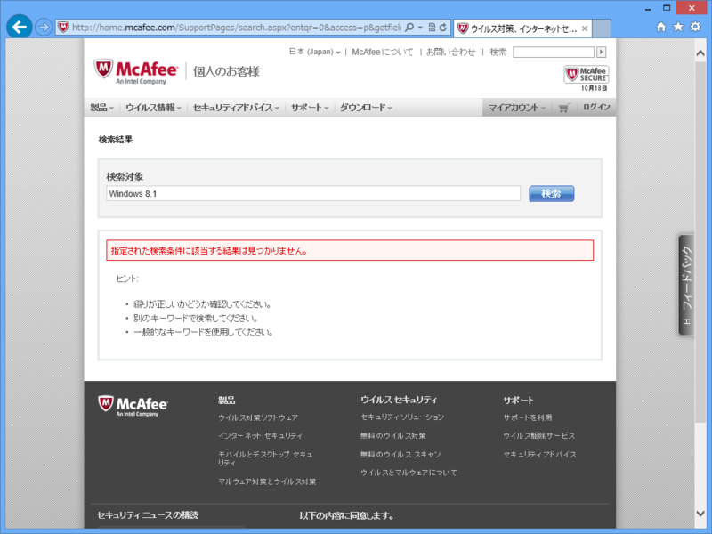
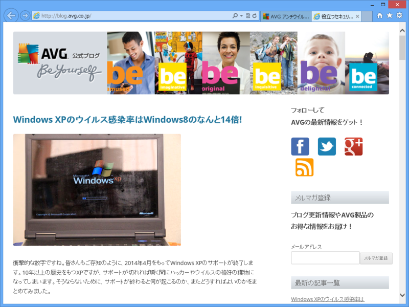

ウイルス対策ソフトの信頼性を Windows 8.1 の対応状況で計ってみるなど。
公開日：
思うに、最近の Windows 向けのウイルス対策なんてどれも似たようなものだと思う。実際、最近は革命的な機能の追加なんてなくて、新製品はもっぱら Mac OS X だのモバイル端末（おもに Android）をターゲットにしている。
では、なにを基準に選べばいい？
これはきっと人それぞれだと思う。ブランド的な安心感とか、ポップアップが煩わしくないとか、カスタマイズ性が高くて自由が効くだとか、見た感じとっつきやすそうとか。それでもあえて自分がなにか一つを基準をしてあげるとすれば、それは「対応力」だと思う。
たとえば、誤検知を出してシステムファイルを削除してしまうといった事故は、ある意味仕方がない。仮に自分が製品担当者だとして、100%防げるとはとてもじゃないけど保証できない。けれど、アフターケアがしっかりしていれば、まぁ、許せないこともないと思う。「終わり良ければすべてよし」ではないが、「対応よければまぁまぁ許せる」ってものだ。
というわけで、今回はこの「対応力」を「Windows 8.1への対応状況の告知」という面で比較してみようと思う。最新 OS に対応できないウイルス対策ソフトが、最高のセキュリティを保証できるとはとてもじゃないが思えない。もし仮に対応できていなくても、顧客がいつ Windows 8.1 に移行できるか計画が立てられるように、ロードマップをしてしておくべきだろう。しかも、なるべくわかりやすく。
では行ってみよう！（順不同）
ESET / NOD32
ひとつ目は、自分も割と愛用していた ESET。まぁ、経験的に誤検知が少なくて、あまり余計なことをしないのが気に入っている。人に勧めるときはコレだな。さて、Windows 8.1 対応はどうかというと――

■ Microsoft Windows 8.1 について [ 2013.10.18 最終更新 ]
□ パッケージ / ダウンロード製品（個人のお客さま向け製品）
2013年10月18日より対応を開始しました。
ご利用いただけるプログラムのバージョンに制限があります。
詳細はこちらをご参照ください。
□ ライセンス製品（法人のお客さま向け製品）
新しいプログラムにて対応を予定しています。
対応時期につきましては、年内の公開を目途に準備を進めております。
詳細が決定次第、本ページにてご案内します。キヤノンITソリューションズ：ESET Smart Security & ESET NOD32アンチウイルス：重要なお知らせ
ちゃんと販売元・キヤノンITソリューションズのトップページに告知されていた。これは割りと理想的な告知ではないだろうか。
ただし海の向こうでは Windows 8.1 対応の ESET 7 が出ているので、そのことも案内されていればいいのにと思った。
カスペルスキー
次はカッコいいおっさんのパッケージで有名なカスペルスキー。

10月17日夜にマイクロソフト社よりリリースが予定されています Windows 8.1 に対し、弊社では以下の対応を予定しています。
■ 個人向け製品
カスペルスキー インターネット セキュリティ （カスペルスキー マルチプラットフォーム セキュリティに含まれるアプリケーション）およびカスペルスキー アンチウイルスの最新プログラム（ビルド：13.0.1.4190）はWindows 8.1に対応しています。
このプログラムを利用して、Windows 8.1に新規インストールができます。詳細については以下をご覧ください。
カスペルスキー インターネット セキュリティ
http://support.kaspersky.co.jp/8606#block2
カスペルスキー アンチウイルス
http://support.kaspersky.co.jp/8664#block2現在カスペルスキー インターネット セキュリティおよびカスペルスキー アンチウイルスをWindows 8でご利用の方が、Windows 8.1にOSをアップグレードする場合は、アップデートの操作を行い、プログラムを最新版に更新してください。最新のパッチが適用され、アップグレードしたWindows 8.1でひきつづきカスペルスキー製品をご利用いただけます。詳細については以下をご覧ください。
http://support.kaspersky.co.jp/8647#block1
ぐっじょぶ！ このページはトップページからたどれる。
トレンドマイクロ

何も言うまい。一応フォローしておくと、Windows 8.1 には対応している。
■公開予定日
2013年10月9日（水）
■主な更新内容
ウイルスバスター クラウド が Windows 8.1 に対応します。
Trend ツールバーが Internet Explorer 11 に対応します。
ただ、このページにたどりつけないのでは……もったいない。
ノートン
ノートン先生と言えばかなりの老舗だけれど、こちらはどうだろうか。

最新版で Windows 8.1 に対応済み……だけれど、探すのはちょっと骨が折れるかもしれない。まぁ、ノートン先生レベルになると対応しているのが当たり前で、調べるまでもないのかもしれない。
マカフィー

“Windows 8.1”は特殊すぎる単語だったので、検索には何も引っかからなかった。同社は「Windows 8 だけでは十分な保護対策になりません」（Antivirus Software and Internet Security For Your PC or Mac | McAfee）と主張しているが、Windows 8.1 ではどうなのだろうか。
アヴィラ
無償アンチウイルス四天王のひとり。ほかの三人がだれかは、まだ考えていない。
日本の製品サイトはペライチで参考にならない。検索フォームすら用意されていない。
AVG
ついでだから無償アンチウイルスつながりで AVG を調べよう。

製品サイトはこちらもペライチ。そこからリンクをたどれる公式ブログでは http://blog.avg.co.jp/2013/10/windows-xp%e3%81%af%e3%82%a6%e3%82%a4%e3%83%ab%e3%82%b9%e3%81%ab%e6%84%9f%e6%9f%93%e3%81%99%e3%82%8b%e7%a2%ba%e7%8e%87%e3%81%8cwindows8%e3%81%ab%e6%af%94%e3%81%b9%e3%81%a614%e5%80%8d/ という記事が掲載されている。
（Windows XPをマルウェアから守るには）どうすればいい？
Windows7や8などの最新のOSにアップグレードすることです。
その通りだと思う。Windows 8.1 はセキュリティ面でもかなりの強化が図られている。
アバスト！
アバストの日本語製品サイトもペライチ。ここだけではないが、日本法人や日本代理店の仕事はけっして褒められたものではないと思う。
海外では最新版がでており（25 years in the making – avast! 2014）、Windows 8.1 にも対応しているだけに残念だ。
まとめ
ほかにもあるのだろうけれど、飽きたのでやめる（F-Secureさんなどなど、ごめんなさい）。思った以上にセキュリティ製品って多いんだな。
傾向をまとめると、以下の三パターンに大別できるだろうか。
- わりかししっかり案内を出しているけれど完全対応じゃなかったりする: ESET、カスペルスキー
- 対応しているのが当たり前だからわざわざわ言わない（きりっ: ノートン、トレンドマイクロ
- そもそも告知する気がない: フリーのアンチウイルス
個人的には Windows 8.1 のウイルス対策機能 Windows Defender（Microsoft Security Essentials）があれば十分で、変なエロサイトに行ったり、ダウンロードボタンを偽る偽広告を踏んだりしないように気を付けるだけで十分のような気もする。
一応、会社では決められたセキュリティソフトをインストールしているので悪しからず。でも、まぁ、変なソフトを買って入れるぐらいなら、そのお金で OS をアップデートしたほうがいいと自分なんかは思う。